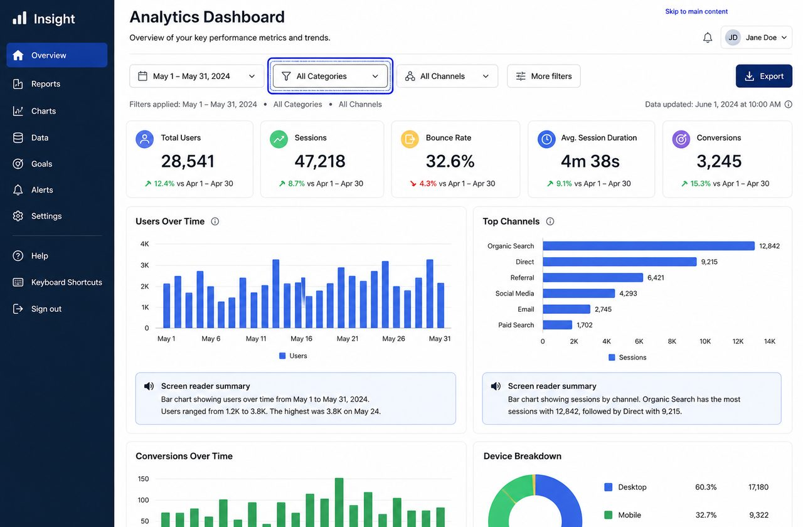
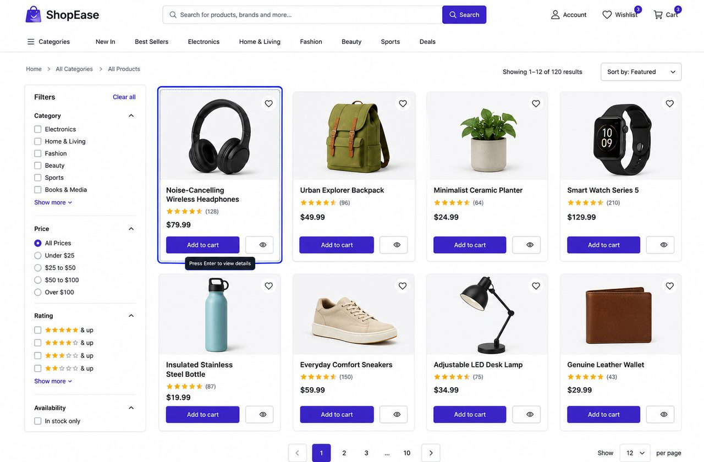
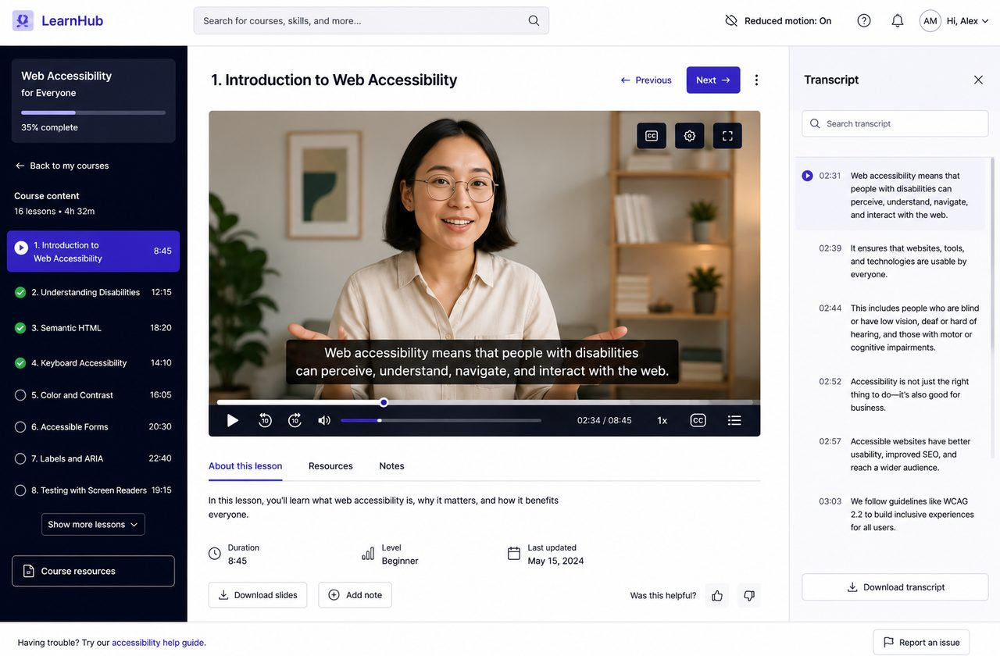
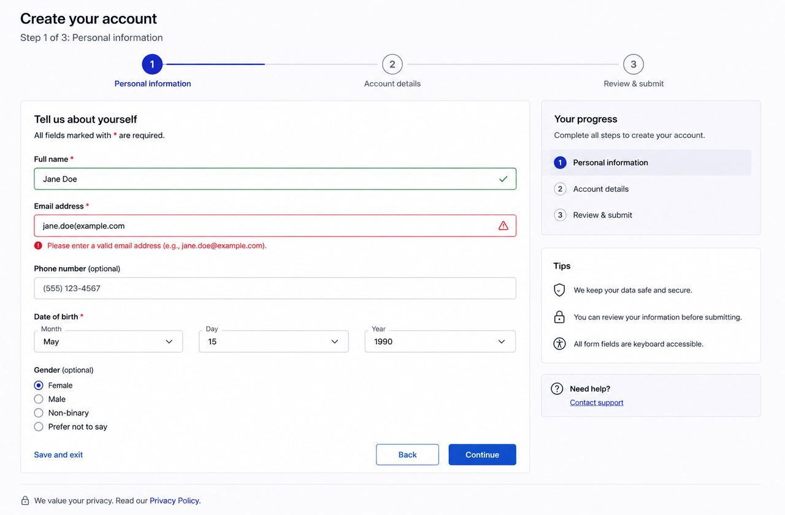
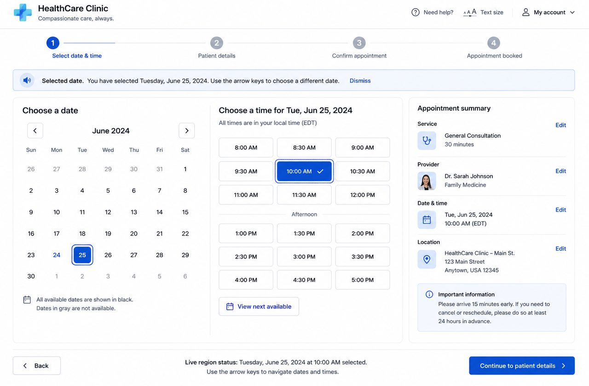
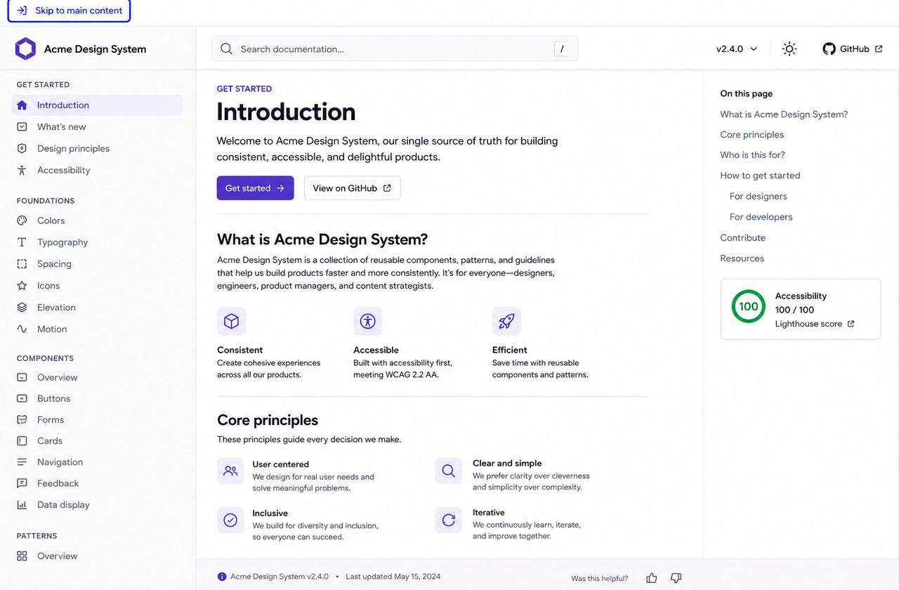

<projects> Selected work </projects>
Six projects, six accessibility problems solved.
Each project below shipped to production with a documented accessibility pass — keyboard testing, screen-reader testing, and a Lighthouse accessibility score of 100 before launch.




